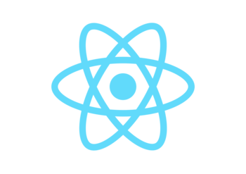

Eligiendo Tecnologías
Sobre la elección de tecnologías que hice: Fue totalmente arbitraria.
React

React es una herramienta que hace bastantes meses estoy posponiendo empezar a utilizar, ya que estuve más metido con VueJS que me resultó cómodo y práctico en extremo. Tengo entendido que el salto entre los “3 grandes de JS” no debería ser tan brusco, habiendo pasado por Angular y Vue intuyo que la transición va a ser medianamente amena. Es más un desafío personal que otra cuestión, ya que tranquilamente podría ir por Vue y trabajar en algo que medianamente manejo.
Golang

Pienso hacer de Go mi caballito de batalla. Durante muchos años el lenguaje que maneje principalmente fue PHP, y si bien no me quejo, me gustaría cambiar un poco el rumbo: Volver a los lenguajes compilados, la performance, los mensaje de error en sábana, etc. Mi trabajo me da la oportunidad de explorar nuevos lenguajes, y Go me parece el candidato perfecto.
Obviamente tengo que ver que tal se adapte a este proyecto, pero considerando algunas herramientas que ya vi funcionando que estan basadas en Go, creo que va a ir bastante bien.
MongoDB

Sobre esta tecnología no tengo mucho más que decir que me falta práctica en NoSQL y esto me vendría bien.
AWS

Claro está que el mundo cloud es el futuro, y voy a utilizar el proyecto para meterme de lleno en ello. Utilizo AWS en particular por una cuestión arbitraria, nada más, pero seguramente me va a dar una noción más amplia de otros proveedores como Azure y Google.
En particular pienso trabajar Go desde los Lambdas de AWS y utilizando también API Gateway, pero seguramente tenga que investigar bastante sobre cuestiones de seguridad, DNSs, usuarios IAM, etc.
Conclusión
No estoy seguro si es un stack muy común, pero estoy bastante decidido a hacer que funcione! La clave para esto es ir paso a paso… Paso a paso…